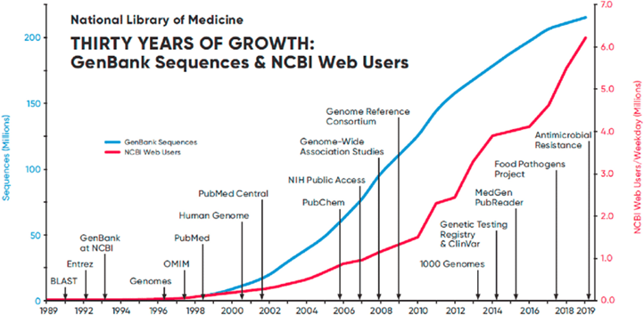
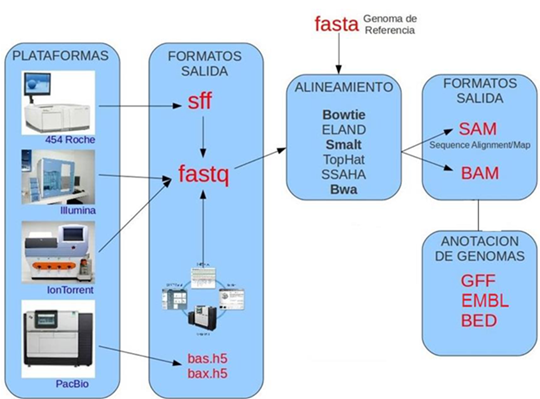
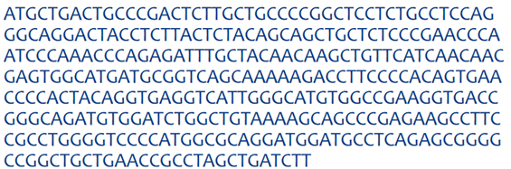
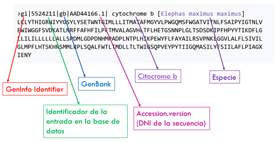
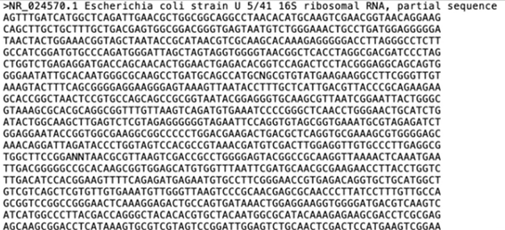
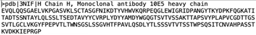
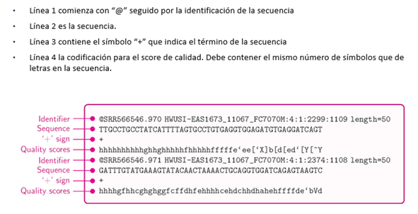
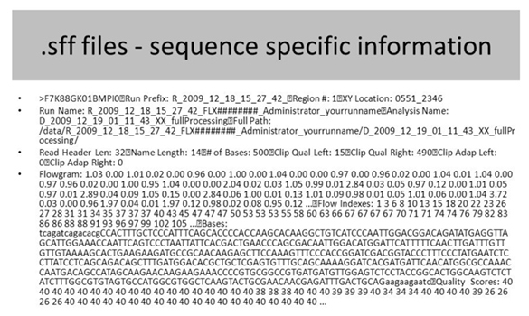
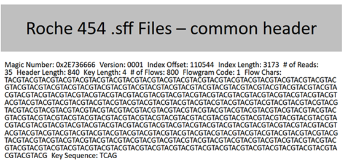
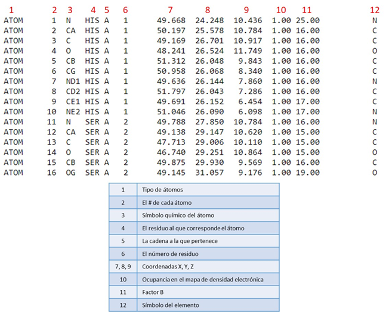

Tipos y Bases de Datos Primarias y Secundarias
Criterios de clasificación de bases de datos biológicas
Las bases de datos biológicas se organizan siguiendo diferentes criterios que permiten clasificarlas según el tipo de información que almacenan, su finalidad, su dominio de aplicación o el modo en que se actualizan. Esta clasificación es fundamental en bioinformática, ya que facilita la identificación y selección de la base de datos adecuada para cada análisis.
Tipos de datos biológicos
Las bases de datos pueden almacenar distintos tipos de información biológica. Entre los tipos más habituales encontramos:
- Genómicas: contienen secuencias de ADN o ARN.
- Proteómicas: recogen información sobre proteínas, sus secuencias y características estructurales o funcionales.
- Transcriptómicas: incluyen datos de expresión génica.
- Metabolómicas: proporcionan perfiles metabólicos y datos de metabolitos.
- Epidemiológicas: integran información relacionada con poblaciones, enfermedades y factores de riesgo.
- Filogénicas: organizan datos relacionados con árboles evolutivos.
- Función biológica: describen funciones de genes y proteínas.
Dominio biológico
Dependiendo del ámbito científico que abarcan, las bases de datos se clasifican en:
- Genética
- Biología molecular
- Biología estructural
- Biología de sistemas
Propósito de la base de datos
Cada base de datos tiene un objetivo específico:
- Bases de referencia: recopilan información primaria sin procesar.
- Bases de anotación: añaden interpretación y análisis sobre los datos brutos.
- Bases de modelado: ofrecen predicciones de estructuras o propiedades.
- Bases de interacción: describen relaciones entre elementos biológicos (p. ej., proteína-proteína).
- Bases clínicas: integran datos sobre enfermedades, mutaciones y fenotipos.
Acceso y usuarios
Las bases de datos pueden ser:
- Públicas: de acceso abierto.
- Restringidas: requieren permisos o suscripción.
- Comunitarias: específicas de grupos científicos concretos.
Actualización y mantenimiento
- Estáticas: apenas se actualizan y mantienen versiones fijas.
- Dinámicas: incorporan actualizaciones continuas, nuevas versiones y correcciones frecuentes.
Tipos de clasificación según alcance y cobertura
El alcance define la amplitud temática y el volumen de datos incluidos. Una base de datos puede tener cobertura amplia (multidominio) o estar muy especializada. Su cobertura depende de:
- El volumen de datos almacenados.
- El número de especies representadas.
- La diversidad de técnicas experimentales incluidas.
La cobertura también está relacionada con la fuente de datos:
- Datos curados manualmente por expertos.
- Datos procesados automáticamente mediante pipelines computacionales.
El nivel de curación distingue entre:
- Bases no curadas (contienen datos brutos).
- Bases con curación parcial.
- Bases exhaustivamente curadas.
Tipos de Bases de Datos Biológicas
Bases de datos primarias
Las bases de datos primarias almacenan datos originales sin procesar, tales como secuencias de ADN o ARN provenientes directamente de máquinas de secuenciación. No contienen interpretaciones adicionales.
Son esenciales para análisis posteriores, ya que sirven como repositorios de referencia.
Ejemplo destacado: GenBank.
Bases de datos secundarias
Estas bases recopilan datos procesados y anotados. A partir de los datos primarios, aplican pasos como:
- Ensamblaje
- Alineamiento
- Anotación funcional
- Identificación de variantes
Las bases secundarias añaden valor biológico y permiten realizar estudios avanzados sin necesidad de procesar los datos desde cero.
Bases de datos compuestas
Integran varias bases primarias y secundarias y, además, incorporan herramientas de análisis bioinformático.
NCBI es un ejemplo emblemático: combina bases de secuencias, taxonomía, genomas, mutaciones y utilidades como BLAST.
Ejemplos según el tipo biológico
- Genómicas: GenBank
- Proteómicas: UniProt
- Transcriptómicas: GEO
- Metabolómicas: HMDB
- Epidemiológicas: WHO Global Health Observatory
- Filogénicas: The Tree of Life Web Project
- Función biológica: Gene Ontology
Estos ejemplos ilustran cómo cada tipo de información biológica requiere una base de datos especializada.

Gráfica de evolución
Tipos de datos
Las bases de datos genómicas almacenan secuencias de ADN y ARN, junto con anotaciones funcionales que describen la estructura y función de genes y proteínas. También incluyen variantes genéticas, datos de expresión y epigenética, y metadatos sobre las muestras y experimentos, permitiendo análisis comparativos, evolutivos y biomédicos.
Tipos de datos
Tipos de secuencias
Las bases de datos genómicas almacenan secuencias de ADN, ARN y proteínas, que representan la información molecular fundamental de los organismos. Incluyen genomas completos, genes individuales, transcritos procesados y secuencias proteicas. Estas secuencias permiten estudiar variación, expresión y los mecanismos biológicos que sustentan la vida.
Tipos de secuencias
Tipos de anotaciones
Las anotaciones añaden contexto biológico a las secuencias, describiendo la función, posición y estructura de genes, transcritos y proteínas. Incluyen regiones codificantes, elementos reguladores, dominios funcionales y características estructurales. Su objetivo es ayudar a interpretar el significado biológico de cada región del genoma.
Tipos de anotaciones
Tipos de estructuras
Las estructuras comprenden la organización tridimensional de proteínas, complejos moleculares y la arquitectura física del genoma. Estas representaciones muestran cómo la forma influye en la función, desde el plegamiento proteico hasta la organización de la cromatina. Son esenciales para entender mecanismos celulares, regulación y actividad molecular.
Tipos de estructuras
Tipos de archivos en bioinformática
La bioinformática utiliza diversos formatos de archivo para representar secuencias, anotaciones y estructuras tridimensionales.
Flujo de archivos
El diagrama resume el flujo completo de trabajo en un análisis genómico basado en tecnologías de secuenciación masiva (NGS), mostrando cómo distintas plataformas producen archivos de salida específicos que posteriormente se transforman en formatos estándar como FASTQ para ser alineados contra un genoma de referencia en formato FASTA mediante herramientas especializadas. Tras el alineamiento, los resultados se almacenan en archivos SAM o BAM, que sirven como base para la fase final de anotación del genoma, donde se identifican genes y regiones funcionales usando formatos como GFF, EMBL o BED. Este flujo permite comprender la procedencia y la evolución de los datos a lo largo de los pipelines bioinformáticos.

Flujo de datos en un análisis NGS: desde la generación de lecturas por distintas plataformas de secuenciación hasta su alineamiento y posterior anotación del genoma.
Archivos de secuencias
RAW
Es el más simple para representar una cadena de ADN o de aminoácidos

Raw
FASTA
Formato simple que contiene un identificador y una secuencia. Es uno de los formatos estándar más utilizados.

FASTA

FASTA Nucleótidos

FASTA Proteínas
FASTQ
Incluye la secuencia y un conjunto de puntuaciones de calidad Phred. Es el formato típico de los secuenciadores de nueva generación.

FASTQ
Phred quality score
La asignación de la puntuación Phred se basa en la señal y el ruido capturados durante el proceso de secuenciación.
Los datos brutos provenientes de los secuenciadores contienen señales electrónicas que representan las bases secuenciadas.
El software analiza estas señales, evaluando la intensidad de la señal y el ruido asociado para determinar la probabilidad de que la base sea incorrecta.
El cálculo de la puntuación Phred se basa en la distribución de la intensidad de la señal capturada y la frecuencia con la que ocurren errores en las secuencias. Utiliza algoritmos y modelos estadísticos para transformar la información de señal y ruido en un valor de probabilidad de error asociado a cada base.
Este valor se convierte en una puntuación de calidad Phred que va asignada a cada base secuenciada.
SFF
El formato Standard Flowgram Format, asociado a las plataformas 454, incluye información detallada sobre las señales detectadas durante la secuenciación.

Standard Flowgram Format - Sequence Specific Information

Standard Flowgram Format - Common header
Archivos anotados
- GenBank: archivo completo con anotaciones, referencias y secuencias.
- GFF/GTF: describen características de los genes.
- BED: regiones genómicas.
- VCF: variantes genéticas (SNPs, indels).
Archivos estructurales
PDB
El formato del Protein Data Bank contiene coordenadas tridimensionales de proteínas.

Protein Data Bank
Archivos de alineamiento
- SAM: alineamientos en formato de texto.
- BAM: versión binaria comprimida del SAM.
Otros formatos
- bigWig / bigBed
- Newick / Nexus (árboles filogenéticos)
- CSV / Excel (datos tabulares)